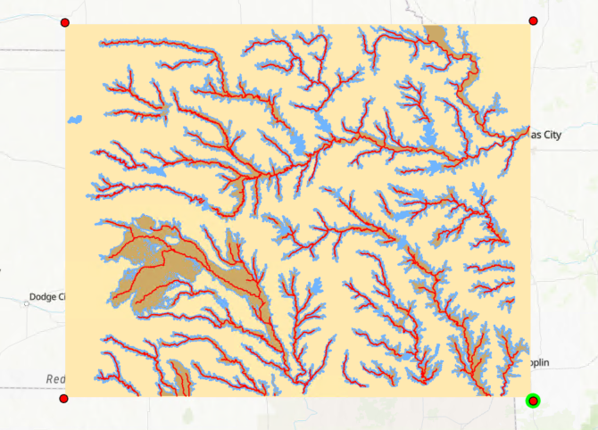
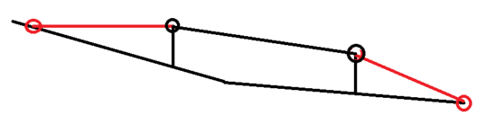

5. Gauges#
Flood mapping depends on the availability, quality and timing of the stream gauge stage. In the US, the most authoritative source for gauge data is the USGS National Streamflow Information Program which supports the collection and (or) delivery of both streamflow and water-level information at over approximately 10000 sites.The National Water Information System (NWIS) publishes the real-time (instantaneous) gauge data at some of those sites.
5.1. USGS Gauges in and around Kansas#
Using the bounding box of (-99.61,36.81,-94.20,40.25) which is based on the 1-km buffer of the Kansas stream and reservoir floodplains raster (see the image below), USGS lake and stream gauges with instantaneous values are retrieved from NWIS’ Site Web Service using this URL which is generated using the Site Test Tool. The returned gauge data, which is in USGS RDB tab-delimited format, was manually processed and saved as an Excel file (usgs_gauges_ks_nearby.xlsx), which was then imported into ArcGIS as a feature class. A total of 271 gauges within the geographic box were retrieved from the site web service.

5.2. NOAA/NWS/AHPS Gauges#
The National Weather Service’s (NWS) Advanced Hydrologic Prediction Service (AHPS) is a web site that provides forecast products, including river (and reservoir) stage observation and forecasts. While AHPS allows users to view current observations and forecasts through interactive online maps, it also makes the data downloadable as Shapefiles or retrievable through WMS/WFS services. The majority of the AHPS gauge data, especially current observation stage, originates from the NWIS.
Current and forecast gauge stage in the nation can be downloaded as Shapefiles, which may not be efficient if only a small subset of gauges are used for flood mapping. This capability is implemented in functions GetAhpsGaugeForecast() and GetAhpsGaugeHistoricalFloodStages() in fldpln_gauge.py.
There are 241 AHPS gauges from the current observation shapefile which are within the geographical box.
5.3. Merge USGS and AHPS gauges#
Among the 271 USGS gauges and 241 AHPS gauges, there are overlapping gauges which can be identified based on their distance. First, the nearest AHPS gauges for each USGS gauge which are less than or equal to 350 m were found. This resulted in 191 USGS-AHPS pairs. Then, the nearest USGS gauges for each AHPS gauge were also found and this resulted in 190 AHPS-USGS pairs. There are 190 gauge pairs that are nearest neighbors to each other. There is two USGS-AHPS pairs where two USGS gauges have the same AHPS gauge as their nearest gauge. In other word, in one of the USGS-AHPS pairs, the AHPS gauge has a different nearest USGS gauge. At the end, there 190 common/overlapping gauges, 81 unique USGS gauges and 51 unique AHPS gauges. In total there are 322 gauges that might be used for flood mapping.
The nearest approach doesn't guaranntee the USGS~AHPS paris are the same gauges. Their name (or general descriptions) should also be check to reassure this!
The USGS gauges have the following fields:
agency_cd -- Agency
site_no -- Site identification number
station_nm -- Site name
site_tp_cd -- Site type
dec_lat_va -- Decimal latitude
dec_long_va -- Decimal longitude
coord_acy_cd -- Latitude-longitude accuracy
dec_coord_datum_cd -- Decimal Latitude-longitude datum
alt_va -- Altitude of Gage/land surface
alt_acy_va -- Altitude accuracy
alt_datum_cd -- Altitude datum
The AHPS gauges have the following fields:
'GaugeLID', 'count', 'Status', 'Location', 'Latitude', 'Longitude',
'Waterbody', 'State', 'Observed', 'ObsTime', 'Units', 'Action', 'Flood',
'Moderate', 'Major', 'LowThresh', 'LowThreshU', 'WFO', 'HDatum',
'PEDTS', 'SecValue', 'SecUnit', 'URL'
The merged gauges have the following fields:
'stationid','name','organization','stype','stationurl',
'status','status_code','stage_ft','stage_time','graphurl',
'action_stage','flood_stage','moderate_stage','major_stage',
'datum_elevation','vdatum','to_navd88',
'latitude','longitude','hdatum','x_utm14','y_utm14']
When merge the gauges, the field values (such as the ‘name’ field) of the common gauges primarily came from USGS fields. For common and just AHPS gauges, their station URLs are from AHPS which are used to retrieve gauge stage datum elevation and vertical datum information. For the gauges that are only available from AHPS, gauge type (i.e., the ‘stype’ field) is based on whether its “Location” field contains the word “ Lake” or “ Reservoir”. Also, the “State” field is added into the “name” field for selecting lake gauges based the states later.
5.3.1. Gauge stage datum elevation and vertical datum#
The stage of a stream gauge is relative to its datum which have an elevation defined on either vertical datum NAVD88 or NGVD29. It’s necessary to have the stage datum elevation in order to convert stage into stream water surface elevation and then to calculate depth of flow (i.e., depth of flow = water surface elevation - stream bed elevation). For lake guages, the elevation reported are relative to the vertical datum, either AVD88 or NGVD29.
Most USGS have stage datum elevation and vertical datum information when guages are retrieved from the NWIS. The AHPS gauges from the downloaded shapefile don’t have those information. All the AHPS gauges have their datum elevation and vertical datum information retrieved from their station HTML page using the function GetAhpsGaugeDatumElevation() in fldpln_gauge.py. When common gauges don’t have datum elevation and vertical datum, they are also retrieved from AHPS station pages if they have the information.
Compared with David’s original gauges (622 in fldpln_ks.sde.FC_Stream_Gauges) and revised/cleaned-uo gauges (266 in fldpln_ks.sde.fldpln_ks_gauges), the new gauges cover all David’s gauges within the geographic box.
5.4. Prepare lake gauges for flood mapping#
AHPS gauge DMRK1 seems a stream gauge in the upstream of the Webster reservoir and should not be classified as a lake gauge just based on its name has the word of reservoir. This gauge’s type (i.e., the stype field) was changed to ‘ST’ in the code. USGS lake gauge 391259097001800 seems an odd lake gauge and there is another lake gauge MLFK1 for the same lake.
Among the 322 gauges, there are 28 lake gauges within the geographic box and 23 of them are in Kansas. Compared with David’s lake gauges (24) in Reservoir_Vertical_Datum_Adjustments.xlsx, two of the most western lake gauges (Cedar Bluff & Keith Sebelius) are not included as they are outside the geographical box. The rest of the 22 gauges are all covered by the new lake gauges, and the USGS lake gauge 391259097001800 is an extra. Note that there are only 20 lakes that we have the bathymetry/DEM data and can map their flood inundation extents.
Based on David Weekly’s Excel file (Reservoir_Vertical_Datum_Adjustments.xlsx) which stores the lake gauges that have bathy/DEM data for lake inundation mapping, for the 23 lake gauges, there are 19 gauges that can be used for FIM.
5.5. Prepare stream gauges for flood mapping#
Among the 322 gauges, there are 294 stream gages that can be used for flood inundation mapping (FIM). With a snapping distance of 350 meters, there are 215 stream gauges that can be snapped to the FSPs of all the libraries. However, the same gauge can be snapped to the FSPs of different libraries because library FSPs may overlap and sometimes the “overlapping” FSPs may have different locations (see figure below). There are in fact only 193 unique stream gauges that can be used for flood mapping in the libraries.

In total, there are 216 gauges (193 stream gauges and 23 lake gauges) that can be used for flood inundation mapping in eastern Kansas. Among the 193 stream gauges, 2 of them don’t have stage datum elevation. The two gauges, USGS station 06888990 on the Kansas River at Topeka water plant and USGS station 375350097262800 on the lower Arkansas River at a ASR (Aquifer storage and recovery) facility near Sedgwick, KS, may measure water surface elevation directly and therefore don’t need stage datum elevation. However, using the USGS Instantaneous Values Test Tool and python script, it was found that both gauges measure stages. As such, there are a total of 191 stream gauges that can be used for stream flood mapping.
5.6. Vertical datum adjustment#
The FLDPLN libraries (and their FSPs) and lake bathymetry/DEM elevation are based on the NAVD88 vertical datum. Both stream and reservoir water surface elevation needs to be adjusted if their vertical datum are different from the NAVD88. Among the 23 lake gauges, there is only one gauge (06912490, PLKK1) has the vertical datum of NGVD29. Among the 191 stream gauges, there is one gauge (NSOK1) which doesn’t have a vertical datum. For those 23 gauges (22 lake + 1 stream) without vertical datum, we assume the vertical datum is set to NGVD29.
Since FLDPLN libraries use NAVD88, a gauge will have a non-zero adjustment value to NAVD88 if the gauge’s vertical datum is NGVD29. This vertical datum conversion can be done using National Geodetic Survey (NGS)’ interactive Coordinate Conversion and Transformation Tool (NCAT) or Latitude-longitude-height Service. Function NGVD29ToNAVD88OrthoHeightAdjustment() in fldpln_gauge.py has been implemented to use the web service. If a gauge’s horizontal datum is NAD8s or NAd83/WGA84, its vertical datum in the conversion service is assumed as NAD83(1986). Several other NAD83 variants (NAD83(HARN), NAD83(NSRS2007)) were also tried but no difference was found in the adjustments.
For lake gauges, David Weekly provided an Excel file (Reservoir_Vertical_Datum_Adjustments.xlsx) which stores the adjustment. There are some difference between David’s adjustment and the adjustment obtained through the NGS web service. This is likely because the gauge’s latitude and longitude are slightly different and it’s not sure what horizontal datum were used in David’s conversion.
After the above processing, there are 210 gauges (191 stream and 19 lake) can bee for using in flood inundation mapping.
5.7. Create lake and stream FIM tables#
The 19 lake gauges and there corresponding bathy/DEM data file names (stored in the ‘lib_name’ field) are saved in the Excel file fim_lake_gauge_bathy_table.xlsx. The 191 stream gauges and their snapped FSPs are saved in the Excel file fim_stream_gauge_fsp_table.xlsx. Note that there are 213 rows in the table as one gauge can be snapped to the FSPs in different libraries!
5.8. Build a gauge table for NOWCAST#
Create a PostgreSQL table
Convert the table to a feature class in ArcGIS. The feature class is served as a map layer
Update the table
5.9. Gauge issues#
AHPS gauge AWS web service seems unstable (see fim_stream_nowcast_py_02260600.log and fim_stream_nowcast_py_20250303_0904.log) and David commented they are slow than USGS/NWIS. So, Nowcast and Reservior mapping stages are retrieved from USGS/NWIS web service if possible. This led the issue of the Lawrence Kansas River gauge (06891080/LWRK1) which has two stages. Currently the max stage with the most recent stage time is used.
Turn this document into a JupyterNotebook by combining this MD file with scripts gauge_merge_usgs_ahps.py and gauge_prepare_fim_gauges.py
delete def PrepareAhpsGaugeDatum() in fldpln_gauge.py?
Replace SnapGaugesToFsps() with SnapGauges2Fsps()
GetUsgsGaugeStageFromWebService(usgsIds). Gauge 06891080,LWRK1 KANSAS R AT LAWRENCE, KS has TWO values! How should we handle this situation?
Update SnapGauges2FspsBlob(), leave this until it’s necessary.
5.10. David Weekly’s Gauges#
5.10.1. Clean up the gauges#
David’s FC_Stream_Gauges has 622 gauges from various sources (NOAA, USGS, and NB DNR). Below are the major steps involved to clean up the gauges.
Current observation gauges (i.e., national_shapefile_obs.shp) within 1-km buffer of floodplain and reservoir are selected. A total of 203 AHPS gauges are selected.
David’s FC_Stream_Gauges within 1-km buffer of floodplain and reservoir are selected. A total of 398 gauges are selected. David’s gauges are more than AHPS gauges because of they also include some gauges from USGS and the State of NB.
Clean up David’s gauge
Among David’s 398 gauges, there are duplicates between AHPS and USGS (133) and AHPS and NB (5) gauges. After removing the duplicates (USGS & NB gaues), there are 260 gauges (71 USGS, 189 AHPS). This is done by using the tool Generate Near Table, which can find the nearest neighbor within the same FC.
Among the 189 AHPS gauges, 182 are in current AHPS gauges (ahps_gauge_within_fldpln_reservior_1kmbuf). 7 of them are NOT included in current AHPS gauges though some of them still actively observe stage. Those 7 gauges are kept. This is done by spatially joining AHPS gauges to David’s gauges.
Among the 71 USGS gauges, 57 are not included in the AHPS gauges (no AHPS gauges are found within 1-km radius). 14 of the 71 USGS gauges have AHPS gauges within 1-km radius. 3 of them are different from the AHPS gauges. The other 11 USGS gauges are found in AHPS gauges. Their attributes (such as AHPS station ID, major flood stage, etc.) are copied from AHPS gauges.
At the end, 260 David gauges are kept. Among them, 60 are USGS gauges and the rest are AHPS gauges.
There are 8 AHPS gauges (david_ahps_merge) which are not included in the 260 David gauges. This is done by spatially joining David’s gauges to AHPS gauges. Those gauges are merged together as the gauges for use in Kansas flood mapping. Later it was found there are two gauges (ARCCK1 and STCK1) are duplicated and they were deleted. So, at the end there are 266 gauges collected based on David’s initial gauges.
The original gauge fields were further edited and several new fields (vdatum, to_navd88, x_utm14, y_utm14) were added and populated with data from AhpsGaugeDatum_XYTableToPoint and Reservoir_Datum_Conversions__XYTableToPoint tables. The final gauges are saved in fldpln_ks_gauges.
This cleanup process is laborious and it may be worth to directly retrieve data from the data sources!
5.10.2. Check the gauges#
Initially, 200 m and 220 of the 266 gauges can be snapped to library FSPs within a radius of 200 meters. It was found, however, that two gauges (SJSM7 and KCDM7) have a distance of 238.6 and 204.7 respectively and were not used in flood mapping for library morv. The snap distance was then increased to 250 m and this increase didn’t affect other gauges. With the increased snap distance, there 222 gauges can be snapped to the FSPs and 64 of them don’t have a station datum elevation. The following is the checking results by running the gauge_check_gauges.py script.
bigblue: 10 gauges, 1 no-datum: ['BARK1']
chik_saltfork_medlodg: 2 gauges
cotneo: 14 gauges, 8 no-datum: ['07179710', '07180200', '07180500', '07179750', 'CTWK1', '07179700', '07179785', 'EPRK1']
ksrv: 24 gauges, 6 no-datum: ['06888500', 'LOUK1', '06888990', '06892518', '06888300', 'TNRK1']
litark: 3 gauges
lowark: 15 gauges, 6 no-datum: ['07144201', '07143375', '07144301', '07144490', '375350097262800', 'BLPK1']
lowrep: 5 gauges, 3 no-datum: ['06855850', 'JMSK1', 'CLDK1']
mdc: 12 gauges, 2 no-datum: ['06916600', 'QNMK1']
midkan: 11 gauges, 3 no-datum: ['06888500', 'LOUK1', '06888300']
midsol: 3 gauges, 1 no-datum: ['06876070']
morv: 21 gauges, 5 no-datum: ['PLCM7', '06892518', '06893195', 'TNRK1', 'KSYM7']
nemaha: 2 gauges
neosho: 21 gauges, 8 no-datum: ['07179710', '07183000', '07184500', '07179750', '07179700', '07182395', 'EPRK1', 'LRYK1']
ninnescah: 3 gauges, 1 no-datum: ['07144780']
osagemarmaton: 5 gauges, 1 no-datum: ['06917500']
smoksalsol: 13 gauges, 4 no-datum: ['06876070', 'GLAK1', 'ABIK1', 'BRNK1']
spring: 3 gauges
upark: 10 gauges, 2 no-datum: ['07142680', 'HCHK1']
upkan: 13 gauges, 6 no-datum: ['06857100', '06879100', 'ALEK1', 'ABIK1', 'JUCK1', 'WDBK1']
uprep: 5 gauges
upsal: 4 gauges, 1 no-datum: ['06867500']
upsmoky: 3 gauges
upsol: 2 gauges
verdigriscaney: 10 gauges, 5 no-datum: ['07166500', '07167500', '07170990', '07172000', '07165750']
walnut: 8 gauges, 1 no-datum: ['07148111']
Total snapped gauges: 222, 64 without datum
While mapping the 2019 flood event for the low Neosho river, we found AHPS gauge NSOK1 has a NGVD29 vertical datum of 808 and NAVD88 of 777.51. The difference between the two vertical datum calculated from the converter is only 0.505. Using the NGVD29 datum led to higher water surafce elevation at NSOK1 than the upstream gauge OSWK1, and caused significant overestimation on the flood event. When we used 777.51 as NGVD29 datum, those anormalies were removed. This example shows there may be errors for the AHPS gauges.
5.11. Retrieve current and forecast gauge stage from AHPS#
Current and forecast stage for a set of gauges can be retrieved using a query supported by the AHPS WMS/WFS services or the same service on AWS . This capability is implemented based on David’s code.
For unknown reason, requesting more than one gauge (using OR in the SQL whereclause) is prohibited when using the idpgis service. The AWS service seems working though (see email exchange with Don Rinker at NWS on this issue)
5.12. Interpolate DOF for FSPs using snapped gauges#

Iterate stream orders from low to high
For the gauge(s) on a stream order:
Add an up-stream ending gauge (left orange circle) by leveling the water toward the end of the segment of the most upstream gauge (left black circle)
Add a downstream ending gauge (right orange circle) by setting the stage to 0 at the start of the segment of the most downstream gauge (right black circle)
If the stream is a tributary and its flow-in stream have an interpolated stage at the junction, then the downstream ending gauge will have the stage of the junction
There are 3 DOF interpolation functions in fldpln.py:
EstimateFspDofFromGauge() implements both horizontal and vertical interpolation using self-developed functions.
EstimateFspDofFromGaugeOld() only implements horizontal interpolation using np.interp().
EstimateFspDofFromGaugeReallyOld(), the version before EstimateFspDofFromGaugeOld(), only implements horizontal interpolation using np.interp().
5.12.1. Horizontal Interpolation#
This approach linearally interpolates a FSP’s DOF (deepth of flow) between two gauges using the stream-distance of the FSP as the weight. Let gx1 and gy1 be the stream-distance and DOF of the first gauge respectively and gx2 and gy2 be those of the second gauge. With a FSP which has a stream-distance of fx, the DOF of the FSP, i.e., fy can be claculated as: fy = gy1 + (fx-gx1)*(gy2-gy1)/(gx2-gx1)
5.12.2. Vertical Interpolation#
This approach linearlly interpolates a FSP’s DOF between two gauges using the filled elevation of the FSP as the weight. Horizontal is used only when interpolting the FSPs between two gauges which are located on flat filled elevation.
Let gx1, ge1 and gy1 be the stream-distance, filled elevation and DOF of the first gauge respectively and gx2, ge2 and gy2 be those of the second gauge. With a FSP which has a stream-distance of fx and elevation of fe, the DOF of the FSP, i.e., fy can be claculated as: fy = gy1 + (fe-ge1)(gy2-gy1)/(ge2-ge1) if ge2 == ge1, then fy = gy1 + (fx-gx1)(gy2-gy1)/(gx2-gx1)
5.13. Manually assign stream orders#
Stream order is crucial in interpolating FSPs’ DOF for flood mapping. They are currently manually assigned in AcGIS. Below are the necessary conditions to make sure the interpolation on DOF can be carried out correctly.
Low stream (multiple segments) order indicates main stream and high orders mean tributaries.
Order must be unique to each contiguous stream. No two streams can have the same order even if the streams are in different sub-watersheds in a library (see Neosho as an example)